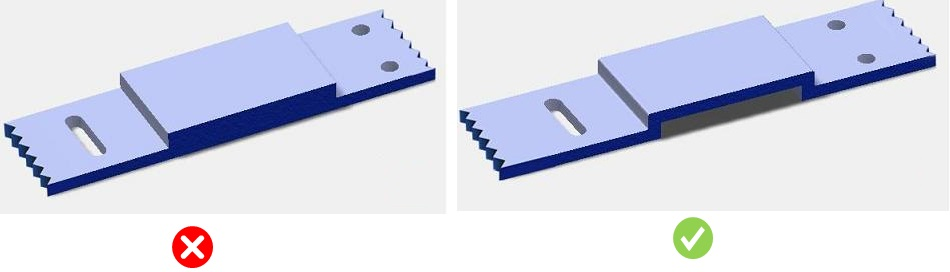

部品において、ベース肉厚はユーザーが指定した範囲内である必要があります。
部品の肉厚をどの程度にすべきかを一般化することは容易ではありません。肉厚（壁）は、設計コンセプトと具体化の両方に関わります。壁は、その役割を果たすために、十分に厚く、強く、剛性があり、または十分に低コストである必要があります。しかし特に、射出成形のような製造プロセスでは、素早く冷却できる程度に薄く、かつ金型充填を効率よく行える程度に厚いことも必要です。材料自体が本質的に強い、または剛性が高い場合、壁はより薄くすることができます。
製品設計および製造プロセスに応じて、材料の種類ごとに必要とされる均一肉厚は異なるため、ユーザーは自身の製造プロセスに基づいて適切な値を設定できる必要があります。
一般的な指針として、強化材（補強材入り）材料の肉厚は 0.75 mm～3 mm、非充填材（フィラーなし）材料の肉厚は 0.5 mm～5 mm とすることが推奨されます。
製品設計および製造プロセスに対して選択された材料に基づく推奨値は、ルール構成から選択する必要があります。
製品の製造条件および使用条件に応じて、部品の公称肉厚の適切な値を選択または設定してください。
ユーザーは、材料肉厚の表において、ドロップダウンリストから材料を選択できます。このドロップダウンリストは、Materials Database 内の材料を使用して生成されます。
DFMPro の実行時に、ユーザーは Input Selection ダイアログボックスで部品の材料を選択する必要があります。ユーザーは、設定された「Material Group」の下にある任意の「Material Grade」を選択できます。
注記：
各種熱可塑性および熱硬化性の成形材料における公称肉厚の作業範囲は、Society of Manufacturing Engineers（Tool and Manufacturing Engineers Handbook, Volume 8, Plastic Part Manufacturing）の提供によるものです。
最小および最大の肉厚条件は、ベース壁（コア面とキャビティ面を跨ぐ部分）に対してのみチェックされます。正しい肉厚検証を得るために、設計者は正しい金型壁分類が設定されていることを確認する必要があります。
